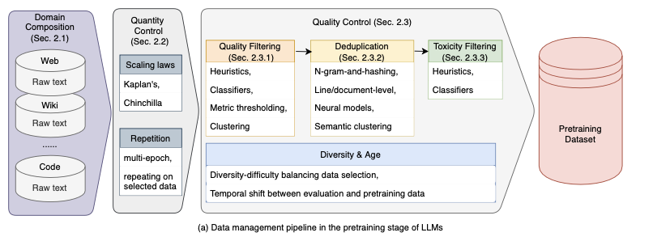
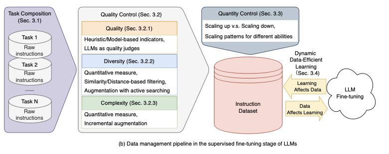
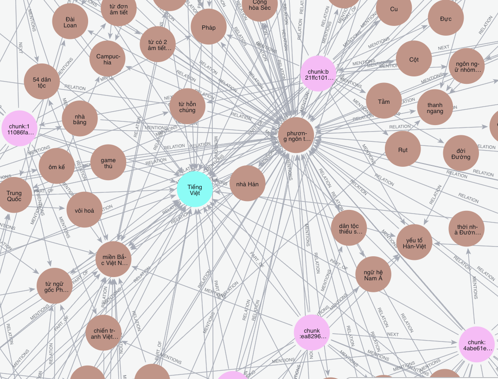

Data management for LLM training
A clean, evidence-first pipeline for Vietnamese dataset curation.
← → arrows or scroll to navigate
Why LLMs + Vietnamese
Vietnam needs LLMs that speak Vietnamese to preserve meaning, culture, and local trust
- The Power of LLMs: Vietnamese AI can scale local reasoning, language understanding, and real-time knowledge work.
- Cultural Precision: Native models preserve tone, idioms, and cultural meaning without mistranslation.
- Data Sovereignty: Keeping AI infrastructure local protects citizen, corporate, and government data.
- Local impact: Tailored models accelerate healthcare, education, legal services, and public administration.
Data Necessity
Why Vietnam lags behind the US in LLM training data
- Low-resource gap: Vietnam has far less digitized, labeled, and open Vietnamese text than the US.
- Hidden content: Valuable local sources are often private, government-owned, or not prepared for AI ingestion.
- Infrastructure gap: Vietnam needs local pipelines, curation standards, and shared datasets to build native models.
What must change: collect and curate Vietnamese corpora, standardize local data formats, and build provenance-rich pipelines so native models can learn from real language, culture, and public-domain knowledge.
Training Stages
What data is needed in LLM training?
- Pretraining: Broad Vietnamese corpora and multilingual context to teach language patterns.
- Fine-tuning: Curated Vietnamese examples, QA pairs, domain documents, and safety-aligned samples.

Pretraining data pipeline

Fine-tuning data pipeline
All data must be cleaned, deduplicated, and filtered to remove bad, noisy, or irrelevant content before it enters the pipeline.
Our Solution
Why knowledge graphs make Vietnamese LLM training more efficient

- Knowledge graphs capture entities, relationships, and provenance in a structured form.
- That structure gives LLMs clearer, higher-value training signals than raw text alone.
- Graphs make it easier to generate grounded fine-tuning examples and support retrieval-based reasoning.
- They also help reuse knowledge across tasks while preserving accuracy and explainability.
KG Characteristics
What We Focused On
- Scalability: LLMs require vast amounts of data to perform well, and new data is constantly being generated. We therefore store the graph in a graph database (Neo4j) to support growing number of nodes and relations. And we implement a legal web scraper to continuously feed new data since the LLMs can never get enough data.
- High-quality data: LLMs need high quality data to perform well, and to ensure the data is accurate and reliable with no hallucintaions. We evaluate with metrics (completeness, consistency, duplication rate, factual grounding) and compare fine-tuning LLMs with KG data vs without KG vs no fine-tuning.
- Support for evolving knowledge: We want to be able to update the knowledge graph as new information becomes available. When this happens, we might get a new version of an existing document, we then delete that document from the knowldege graph, but store it in a separate Database. keep historical versions of source documents while evolving the KG by iteratively adding nodes and evidence.
These characteristics ensure the KG is robust, auditable, and ready to drive both model training and runtime retrieval strategies.
Pipeline Architecture
How our Vietnamese KG pipeline flows
The knowledge graph is exported to, GraphML, and Neo4j CSV for downstream training pipelines. For large-scale graphs that would exhaust pipeline machine RAM, we stream entities and triples directly into Neo4j — building the graph in-database rather than in memory. Old chunks are atomically replaced when documents are updated.
Pipeline — Data Preparation
Ingest, clean, chunk, and deduplicate
- Ingest: Load Vietnamese text from web scrapes, Wikipedia dumps, and curated JSONL sources — normalize into a unified document model with metadata.
- Clean: Strip HTML, normalize Unicode (Vietnamese tone marks), remove boilerplate, and filter non-Vietnamese or low-quality content.
- Chunk: Segment documents into semantic chunks (sentence, paragraph, or fixed-size) with stable chunk IDs for traceability.
- Deduplicate & QA: Near-deduplicate at document and chunk level; apply heuristic quality filters to remove noise before extraction.
Pipeline — Knowledge Extraction
Extract, resolve, build, and expand the graph
- Extract entities & relations: Identify people, places, organizations, and facts from cleaned Vietnamese text using ML extractors (with optional LLM fallback).
- Entity resolution: Merge mentions of the same real-world entity across documents using embedding similarity and rule-based linking.
- Build & validate graph: Assemble entities and triples into Neo4j with ontology-constrained node types (:Chunk, :Document, :Entity) and relationships (:PART_OF, :MENTIONS, :NEXT).
- Export & expand: Produce JSON, GraphML, Neo4j CSV, and RDF exports; continuously ingest new sources and refresh the graph with full provenance tracking.
Evaluation Results
Metric-driven results
- Coverage: improved Vietnamese content breadth and topic coverage.
- Quality: reduced duplication, noise, and factual errors.
- Trust: stronger provenance and validation for model-ready data.
- Readiness: outputs that support fine-tuning, retrieval, and evaluation.
AI Safety & Trust
Built-in safeguards against hallucination and data risk
- Provenance-backed facts: Every entity and relationship is traced to its source document via content hash and ingestion run ID — nothing is invented.
- Ontology-constrained extraction: Entities and relations are validated against a structured ontology, not free-form generation, reducing hallucination risk.
- Full audit trail: MongoDB archives every document version permanently; Neo4j deletions are logged in
archived_chunks— the graph can be rebuilt from ground truth at any time. - Privacy-first design: Scraper respects robots.txt; MongoDB stores canonical IDs without personal identifying information; no user data is collected.
- Transparent limitations: Vietnamese NLP model gaps are documented; domain coverage is tracked per ingestion run; outputs include confidence signals where available.
Product & User Experience
From raw text to training data — a clean, guided workflow
- Web dashboard: Upload sources, configure pipeline parameters, and trigger KG generation from a single interface — no CLI required for day-to-day use.
- Live graph explorer: Browse the resulting knowledge graph interactively — search entities, trace relationships, and inspect provenance per node.
- One-click export: Download training-ready data in JSON, GraphML, or Neo4j CSV format for direct consumption by fine-tuning and RAG pipelines.
- Decision-support focus: ML teams can assess data coverage, spot gaps, and verify factual grounding before committing to expensive training runs.
- Vietnamese-first interface: All labels and workflows support Vietnamese language; the system is designed for local AI practitioners, not just English-speaking researchers.
AI-Native Innovation
AI isn't a feature — it's the engine
- ML-powered extraction: Entity and relation extraction uses transformer models fine-tuned for Vietnamese, with LLM fallback for low-confidence spans — not regex or keyword matching.
- Semantic deduplication: Near-duplicate detection uses embedding similarity, not just hash collisions, catching paraphrased content that traditional dedup misses.
- Graph RAG ready: The Neo4j knowledge graph directly powers retrieval-augmented generation — entities and relationships serve as structured context for LLM queries.
- Agentic pipeline design: Each stage (ingest, extract, resolve, build) runs as an independent, testable module — enabling future agent-orchestrated workflows for continuous data curation.
- Vietnamese-first, not translated: Ontology, extractors, and quality filters are built for Vietnamese from the ground up — not repurposed from English tooling with a language flag.
Business Model & Pilot Pathway
From hackathon prototype to real-world adoption
- Target users: Vietnamese AI labs building local LLMs, government digitization teams, university research groups, and enterprises needing structured Vietnamese knowledge.
- Value proposition: Turn months of manual data curation into hours of automated pipeline execution — produce model-ready structured data at a fraction of the cost.
- Pilot pathway: Partner with one Vietnamese university or government agency → run the pipeline on their existing corpus → measure fine-tuning improvement → publish results → expand.
- Open-core model: Core pipeline is open source (Apache 2.0); managed cloud hosting, dedicated Neo4j instances, and enterprise support are paid tiers.
- Strategic roadmap: Q1 pilot → Q2 multi-tenant SaaS → Q3 domain-specific ontologies (legal, medical) → Q4 continuous ingestion service with live KG updates.
Competitive Advantage
Why our approach wins
- KG beats raw text: Structured entities and relationships provide higher-density training signals — models learn facts, not just token patterns.
- KG beats vector DB alone: Vectors capture similarity but lose explicit relationships; our graph preserves who-connected-to-whom, with evidence provenance.
- Dual-store architecture: MongoDB as permanent ground truth + Neo4j as queryable knowledge graph — no other Vietnamese data pipeline offers this level of auditability.
- Continuous update loop: New documents are ingested, old chunks are atomically replaced, and provenance is preserved — the graph stays current without rebuilds.
- Vietnamese moat: Purpose-built for Vietnamese language, culture, and data sources — not a generic tool with a language flag. Scrapers, extractors, and ontologies are all Vietnam-native.